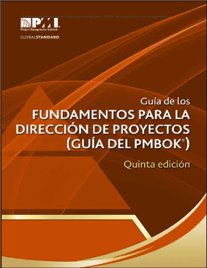

Curso de Gestión de Proyectos para ONG
Introducción
Valencia, 4, 5, 11 y 12 de julio 2014
Quién
Pedro-Juan Ferrer
|
José Mª Toribio
|
y Quienes
- ¿Quién eres?
- ¿A qué te dedicas?
- ¿Cuál es el último proyecto en el que has estado implicado/a?
- ¿Cuál fue tu papel en él?
Expectativas…
Qué
- El presente Curso
- Orientado a ONG
- Materiales de partida del PMI - Mumbai Chapter
- Adaptado a intereses de CVONGD
- Explicar conceptos de Project Management del PMI
- Adaptados a la 5ª Ed. del Project Management Book of Knowledge (PMBOK)
Conceptos de PM del PMI

Project Management Institute
Asociación de profesionales sin ánimo de lucro
- Valores:
- Promoción del Project Management
- Profesionalidad
- Voluntariado
- Comunidad
- Compromiso
Project Management Institute Valencia Spain Chapter
Tiene identidad propia dentro de la organización
Es responsable de la actividad del PMI en la Comunidad Valenciana
PMBOK
- Guía de Buenas Práctica
- Reconocido como estándar ISO 21500
- No es una Metodología
- Unifica criterios y vocabulario
Agenda viernes 4
- Hola y qué hacemos aquí
- Necesidades de PM en ONG
- Definiciones
- Descanso
- Caso de Estudio
- Ciclos de Vida
- Grupos de Procesos
- Áreas de Conocimiento
Agenda sábado 5
- Grupo de Procesos de Inicio
- Grupo de Procesos de Planificación
- Introducción
- Integración
- Alcance
- Tiempo
- Coste
- Calidad
- Descanso
- Grupo de Procesos de Planificación II
- Recursos Humanos
- Comunicaciones
- Riesgos
- Adquisiciones
- Interesados
- Conclusión
Agenda viernes 11
- Grupo de Procesos de Ejecución
- Introducción
- Recursos Humanos
- Comunicaciones
- Descanso
- Grupo de Procesos de Ejecución II
- Interesados
- Calidad
- Adquisiciones
- Conclusión
- Grupo de Procesos de Seguimiento y Control
Agenda sábado 12
- Grupo de Procesos de Cierre
- Responsabilidad Profesional
- Evaluación y Cierre del Curso